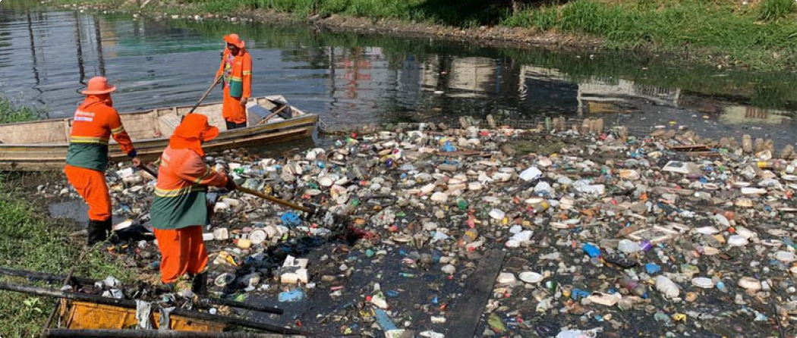

A poluição dos igarapés resulta do desmatamento, despejo de esgoto, descarte inadequado de lixo e materiais tóxicos, construção de barragens e exploração mineral nas redondezas. Essa poluição afeta a fauna e a flora local, além de prejudicar a comunidade, que muitas vezes utiliza os igarapés para atividades recreativas, religiosas e culturais.
Manaus, localizada na região norte do Brasil, é um importante centro econômico da região Amazônica, conhecida por seus igarapés que outrora serviam como fonte de recreação e alimentação. No entanto, o avanço desordenado dos bairros urbanos trouxe impactos ambientais negativos, especialmente a poluição das microbacias.
A poluição dos igarapés em Manaus é um problema grave, com mais de 25 toneladas de lixo sendo retiradas das águas diariamente, totalizando mais de 200 mil toneladas anualmente.
As ocupações irregulares nas margens desses cursos d'água causam danos irreversíveis ao meio ambiente, afetando a fauna, a flora e os cursos hídricos locais. Além disso, a falta de saneamento básico contribui para a poluição, pois muitas pessoas utilizam os igarapés para descartar seus resíduos sólidos. A degradação dos igarapés também impacta social e economicamente, pois muitas comunidades ribeirinhas dependem desses cursos d'água para fonte de água e alimentação. O igarapé do Mindu, por exemplo, que corta metade de Manaus, era utilizado pela população para diversas atividades, mas hoje encontra-se poluído devido à grande carga de resíduos sólidos que recebe.
Nas áreas ao redor dos igarapés em Manaus, há uma mobilização para conscientizar as pessoas sobre a importância da preservação dos rios e igarapés. Entre as ações estão a colagem de cartazes fotográficos, a realização de ações de limpeza em comemoração ao dia do Lixo Zero e o envio de balsas, redes de contenção e equipes especializadas em limpeza para os locais mais afetados, como o igarapé do Quarenta, Mindu e Franco. A prefeitura de Manaus, por meio da Secretaria Municipal de Limpeza Urbana, também envia servidores da Educação Ambiental para orientar os moradores sobre os descartes corretos dos resíduos.
Podemos concluir que a degradação das microbacias de Manaus mostra a necessidade urgente de ação para enfrentar o problema. A poluição dos rios é um problema que afeta a qualidade de vida das populações, dos ecossistemas locais e das atividades econômicas que dependem dos recursos naturais. Nesse sentido, é importante reconhecer coletivamente a importância de proteger o meio ambiente e adotar práticas sustentáveis na gestão dos recursos naturais.
Os dados apresentados ao longo deste artigo mostram que a poluição dos rios é um problema complexo que requer ação integrada e engajamento da comunidade para sua solução. A restauração dos igarapés requer a adoção de políticas públicas adequadas e o compromisso da comunidade com a proteção desses recursos naturais. É fundamental tomar medidas para controlar a expansão urbana, o desmatamento e o descarte inadequado de resíduos sólidos e líquidos.